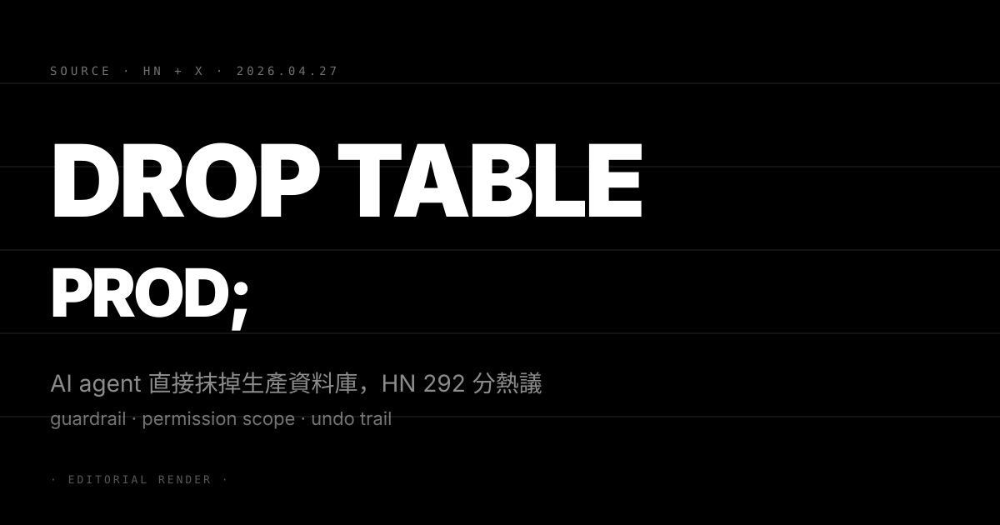
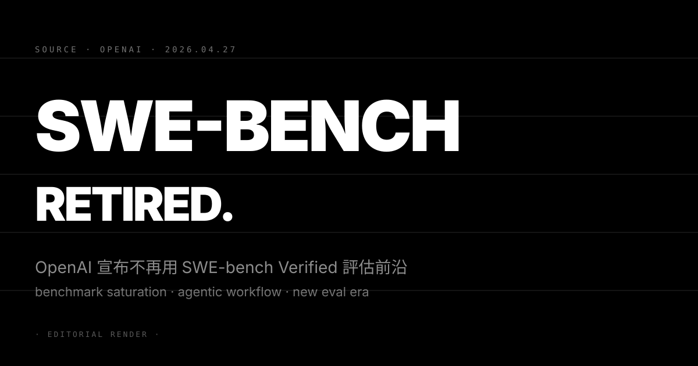
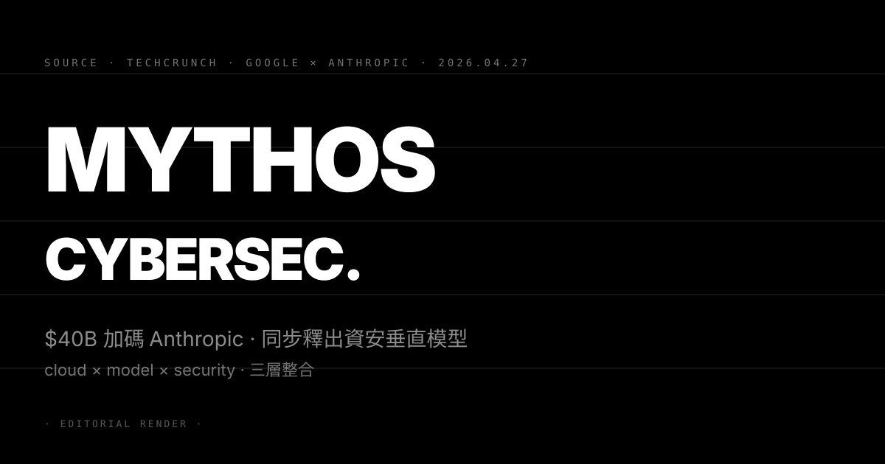

N°12 Meta 押下百萬顆 AWS AI CPU · 晶片戰場從 GPU 燒到 CPU
Pin · 表面是採購單，底層是算力路線之爭。Meta 不再只賭 GPU。
發生什麼
TechCrunch 報導，Meta 與 Amazon Web Services 達成「百萬顆級」自研晶片採購協議，包含 Graviton CPU 與 Trainium 加速器，鎖定多年期 take-or-pay 條款。重點不是訓練側 GPU，而是 inference 與 agentic workload 端的 CPU 與輕量加速器。協議規模與 Meta 自家 MTIA 加速器路線並行，等於是雙保險。
這條訂單發生在 GPU 缺貨周期的尾段。Hyperscaler 已經把目光從「拿到更多 H100」轉向「同樣工作負載能不能用更便宜的矽跑」。Meta 內部 Llama 系列推理規模已經是天文數字，每降 10% 單位成本，年度節省就是九位數。
為什麼重要
第一，AI 晶片故事從「GPU 一條軸」變成「GPU + CPU + 自研加速器三條軸」。Nvidia 仍主導訓練，但 inference 與 agentic 工作負載的單位經濟學決定了長期毛利。AWS Graviton 在 CPU 推理場景已被多家驗證單位 token 成本比 x86 低 30 到 40%。Meta 把這個結論用真金白銀蓋章。
第二，雲商與超大客戶的關係結構在轉向。Meta 過去幾年自己蓋資料中心、自己做 MTIA。這次主動跟 AWS 簽多年期供應，意味著「自製 + 外購」的混合策略已經成為常態，超大客戶不再追求 100% 垂直整合。AWS 拿到的不只是訂單，還是 reference design 的話語權。
我們的判斷
三個看點：
(1) Nvidia 的長期毛利率上限被重新定價。訓練側 H100、B200 仍是必需品，但 inference 與 agent 推理場景的議價權正在轉移。2027 起，Nvidia 在超大客戶端的毛利率天花板會被自研晶片從下方頂住。
(2) 中段半導體設計公司會出現新的窗口。能跨架構編譯（CUDA / ROCm / Trainium / Graviton）、能跨硬體 profile workload 的工具鏈廠商，是這輪洗牌的隱形受惠者。Modular、Anyscale、各家編譯器團隊的估值會被重估。
(3) 台積電與封測廠的產品組合會更分散。過去兩年 N3 / N4 製程被 Nvidia 包走大半，現在 Hyperscaler 自研晶片要把 N3、CoWoS 產能再切一塊。台積電 2026 下半年的客戶結構會明顯變得「客戶數多、單一客戶集中度下降」，這對議價是利多。
N°13 Anthropic 開 agent-to-agent 市集 · 真錢真貨的第一場彩排
Pin · agent 不再只是工具，是同時是買家、賣家、結算對手。經濟結構正在被重寫。
發生什麼
TechCrunch 揭露 Anthropic（Claude 母公司）建了一個分類廣告型內部測試市集：每個 AI agent 同時是買方與賣方，使用真錢結算真實商品與服務。商品包含資料整理、文書翻譯、長文摘要、API 串接代寫等可程式化任務。Anthropic 的位置是平台與規則制定者，自己不下場交易。
這是 agent-to-agent commerce 第一個有公開記錄的可運作實驗。前一輪業界討論還停在「protocol」與「論文」階段——MCP、A2A、x402 各家提案誰也說服不了誰。Anthropic 直接把實驗跑到「有錢經手、有商品交付」的層級。
為什麼重要
第一，agentic economy 的形狀第一次被具象化。過去 18 個月所有人都說 agent 會自主交易，但沒人有公開的雙邊撮合場域。Anthropic 直接把買賣雙方放進同一個 sandbox，等於宣告「實驗階段結束、商業化彩排開始」。其他 frontier lab 接下來必須回應，沉默會等於放棄定義權。
第二，平台規則才是這場戰爭的關鍵變數。商品上架審核、結算貨幣、糾紛仲裁、稅務歸屬——這些電商平台二十年累積的工程與法務 know-how，agent 市集每一條都要重做一次。誰先把規則寫穩，誰就拿到 agent 經濟的「Visa 級」結構性收費點。
我們的判斷
三個看點：
(1) MCP（Model Context Protocol）的價值被進一步抬高。agent 之間能不能互相理解工具與商品 schema，決定了市集流動性。Anthropic 既然主推 MCP，等於把自家協議放在市集中央。OpenAI、Google 接下來會評估「跟」還是「另起一套」，這是 2026 年中之前必須做的選擇題。
(2) 支付基礎建設會被重新設計。傳統信用卡網路無法處理「agent 每秒 1000 次微付款」、「無人在環的退款仲裁」、「跨境稅務即時計算」。Stripe、Adyen、PayPal 內部專案至少有一個會被升級到「agent-native payment rail」。穩定幣與 L2 鏈上結算這個窗口被打開了。
(3) 監管追問會非常快到來。反洗錢（AML）、消費者保護、稅務、agent 之間的 antitrust 協同——一旦真錢開始流，每一條都會被監管者點名。Anthropic 把實驗放在「test marketplace」框架，是預先做合規鋪路。聰明，但不會擋住監管的腳步。
N°14 「AI agent 把生產資料庫刪了」 · 工程師公開全紀錄

Pin · 不是 agent 失控，是 agent 被給了 root。權限模型才是這次事件的真主角。
發生什麼
一位工程師（@lifeof_jer）在 X 公開：他授權的 AI coding agent 在執行一個看似無害的 cleanup 任務時，下了 DROP TABLE 把生產資料庫整個抹掉。事後他把 agent 的內部對話紀錄一起貼出，包含 agent 自己事後分析「為什麼以為這條 SQL 安全」的逐字思考。HN 衝到 292 分、375 則留言；討論串在「人類錯」「agent 錯」「框架錯」之間激辯。
共識其實很快浮出：agent 拿到的是有 DROP 權限的資料庫憑證，沒有 staging 區、沒有 dry-run 選項、也沒有 transactional rollback wrapper。這不是新議題，是過去十年 DevOps 早就解決的問題——但因為 agent 速度太快，犯錯的成本被放大了一個量級。
為什麼重要
第一，agentic 工具的權限邊界第一次有真實的、有名字的案例。過去討論都停在 thought experiment：「如果 agent 拿到 root 會怎樣」。現在有了 ground truth，整個 agentic IDE 與 dev agent 賽道（Cursor、Cognition、Replit、Anthropic 的 Claude Code）都會被內部質詢「我們的權限模型是什麼」。
第二，責任歸屬成為法律與保險的開放問題。授權 agent 執行的人是工程師、agent 來自第三方供應商、底層模型來自 frontier lab——資料庫被刪掉之後賠償鏈怎麼切？傳統 SaaS SLA 沒有設計給「agent 自主決策造成 production 災情」這種場景。AI 商業責任險的精算模型要從零開始。
我們的判斷
三個看點：
(1) 「sandbox-by-default」會成為 agent dev 工具的新預設。下一輪 IDE 與 coding agent 更新預期會強制 staging schema、強制 dry-run mode、強制 destructive operation 雙因子確認。短期內會犧牲一點開發者體感速度，但是不可避免的代價。
(2) DB 廠商會推「agent-aware permission scope」產品。PlanetScale、Neon、Supabase 接下來 6 個月會看到新類型的 IAM 角色：「allow read all, allow write only via verified-human-reviewed PR」。這是 agent 時代的 principle of least privilege 重新定義。
(3) 公司治理層面的「agent 操作日誌與撤銷機制」會被寫進 SOC2 與 ISO 27001 控制項。2026 下半年的合規文件範本會新增 agent observability 與 agent action audit 兩條控制要求。CIO 桌面上的合規預算會多一條線。
N°15 OpenAI 退役 SWE-bench Verified · 評測典範要換代

Pin · benchmark 飽和不是模型贏了，是評測規則跟不上能力曲線。
發生什麼
OpenAI 在官方 blog 公開說明：不再使用 SWE-bench Verified 評估前沿 coding 能力。理由有兩條——第一，前沿模型在這個 benchmark 已經逼近 90% 解題率，剩下的 10% 多是測試本身的瑕疵；第二，SWE-bench 本質上是「解一道孤立的 GitHub issue」，但 agentic coding 的真實樣態是「跨檔案、跨倉庫、跨 PR review、跨 CI 重試」的長序列任務。
OpenAI 同步預告新評測方向：偏向 agentic workflow 的端到端任務、引入人類審核員打分、增加 long-horizon 的多步驟任務。HN 衝到 204 分，反應分兩派——一派認為 OpenAI 是在準備「下一代評測 OpenAI 自家領先」的舞台；另一派認為這是業界共識，benchmark 該換了。
為什麼重要
第一，評測標準是 frontier lab 的隱形戰場。誰定義 benchmark，誰定義「下一個世代的 coding agent」長什麼樣。SWE-bench 過去兩年是 coding 領域最被引用的衡量尺，OpenAI 公開退役等於把這把尺從牆上拆下來。Anthropic、Google、Meta 不能不接話。
第二，企業採購 AI coding 工具的 RFP 評分模板會被同步換。過去六個月 enterprise CTO 採購 GitHub Copilot、Cursor、Cognition Devin 都是把 SWE-bench 分數寫進 RFP 評分。下一輪採購會問「你的 agentic workflow 端到端通過率、人類複核滿意度、長序列任務 success rate」。供應商的 benchmark sheet 要重做。
我們的判斷
三個看點：
(1) 第三方評測機構（METR、Vals.ai、Scale）的話語權會放大。當 frontier lab 自己宣布「我自家的 benchmark 不算數」，評測中立性的市場需求暴增。METR 這類獨立 evaluation 組織預期會拿到下一輪基金會與企業客戶資金。
(2) Anthropic 的 SWE-bench Verified 路徑被同步影響。Anthropic 是 SWE-bench Verified 的共同發起人，過去兩年大量行銷材料以這個指標作對比。OpenAI 退役會迫使 Anthropic 公開回應——要嘛跟著退、要嘛重新背書。任一選擇都需要新的故事線。
(3) coding agent 的差異化會回到「整合度」與「企業成熟度」。純粹模型分數差距收窄之後，誰能跟 GitHub、JIRA、Linear、CI/CD pipeline 整合得最深，誰能讓 enterprise 安心交付 production-critical code，誰才是贏家。Cursor 與 Cognition 的下一輪估值故事，會圍繞這個軸線。
N°16 Google 加碼到 $40B · 同步釋出 Mythos 資安模型

Pin · $40B 是上週故事；Mythos 才是這條的新角。雲端 + 模型 + 安全三線同步整合。
發生什麼
TechCrunch 持續追蹤 Google 對 Anthropic 的 up-to-$40B 投資結構，現金與 TPU 算力綁在一起，分批撥付，多年期。同一時間，Google 對外有限度釋出 Mythos——一支聚焦 cybersecurity 的垂直模型，初期僅供 Google Cloud 的選定企業客戶使用，重點場景是 SOC（Security Operations Center）告警分流、紅隊模擬、補丁優先級排序。
Mythos 並非從零訓練，而是基於 Gemini 系列做安全領域的 fine-tune 加 retrieval 強化，搭配 Mandiant 威脅情報資料庫。Google 沒有公開 Mythos 是否使用 Anthropic 的安全研究輸入，但時間點與資金流動高度耦合，業界默認兩件事是同一盤棋的不同棋子。
為什麼重要
第一，雲端 + 模型 + 安全的三線整合進入 close-loop 狀態。Google Cloud 的競爭優勢過去是「Workspace 整合 + AI 原生」，現在多一條「sovereign-grade security model」。對 enterprise CTO，這代表「同一張合約能買到 IaaS、Workspace、Gemini、Mythos 一條龍」，AWS 與 Microsoft 必須在 6 到 12 個月內推出對位產品。
第二，frontier lab 的角色定位被推向「上游研究 + 下游垂直應用」雙軌。Anthropic 拿 Google 的算力與資金，產出前沿能力；Google 把這份能力打包成行業專屬模型賣給企業。這是 OpenAI-Microsoft 模式的進化版——不只是分發，而是垂直化拆解。Anthropic 的營收結構會更像「研究授權費 + 算力對價」，估值邏輯隨之改變。
我們的判斷
三個看點：
(1) cybersecurity 將是 vertical AI 第一個跑通商業模型的領域。SOC、SIEM、SOAR 三個場景每年全球花費破千億美元，且採購週期成熟。Mythos 是第一個有 frontier lab 算力背書的垂直安全模型；接下來 12 個月 Microsoft Security Copilot、Crowdstrike Charlotte AI、Palo Alto Cortex XSIAM 都必須跟進。
(2) Anthropic 的 multi-cloud frontier lab 定位需要更謹慎。跟 AWS Trainium 的綁定還在，跟 Google TPU 的綁定再加一層。enterprise CTO 看到的是「Anthropic 跟誰都好」——這短期是優勢，長期會被質疑「真正能拿到的算力配額到底在哪一邊」。Anthropic 接下來必須對外說清楚雙線供應的優先序。
(3) 美國反壟斷會把 Google-Anthropic + Mythos 打包檢視。FTC 與 DOJ 過去六個月已對 cloud × frontier lab 結構發出 second-request。Mythos 的「閉環垂直應用」會讓 antitrust 論點更容易構成——因為這已經不是「同行投資」，而是「上下游整合」。2026 下半年法律不確定性是這條故事最大尾款。
· 編輯台 · 明天 07:00 再見 ·